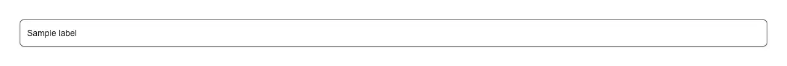

A text input whose label sits inside the field like a placeholder, then shrinks and floats up to straddle the top border the moment the field is focused or holds a value — the Material "outlined" text field, as one accessible input with no animation library behind it. Reach for it wherever a column of labels above a column of boxes would double the height of the form: a login, sign-up or password-reset form, a checkout or billing address, a settings, profile or account page, a dense admin or CRM record, a filter panel or sidebar, a modal or drawer with a handful of fields, an onboarding step, and any mobile form where vertical space is the scarce thing. It is also the shape people expect from a form that has to look like Material, MUI or Vuetify while being built on shadcn. Common asks it answers: "floating label input", "floating label react", "shadcn floating label", "shadcn input with floating label", "animated label input", "label moves up on focus", "placeholder that becomes a label", "material outlined text field tailwind", "MUI TextField equivalent shadcn", "notched outline input", "tailwind floating label", "peer-placeholder-shown", "placeholder-shown not working", "floating label without javascript", "css only floating label", "floating label breaks on autofill", "label overlaps autofilled text", "floating label accessibility", "is a floating label a real label", "compact form fields react", "フローティングラベル react", "ラベルが浮き上がる入力欄". Official shadcn/ui has nothing of the kind, and the gap is wider than "no such component". Fetching all sixty-three registry entries today (sixty-two are fetchable; questionnaire is listed and 404s) and grepping the sources: placeholder-shown is a zero hit across every one of them. Its input is 768 bytes of styled element. Its label is 724 bytes whose only peer- rule is peer-disabled — it styles a label that sits above a field, never one that moves into it. Its field kit stacks label, control and description vertically, which is the layout this replaces rather than a version of it. The eight matches for "floating" in the whole registry are sidebar's variant="floating", a rounded panel with a shadow. So an agent asked for this writes the CSS itself, and the CSS has one trap in it. The trap is that :placeholder-shown only matches while a placeholder is actually being shown, and an input with no placeholder attribute is never showing one. Write the obvious peer-[:not(:placeholder-shown)] rule against a field labelled only by the floating label, and the selector matches nothing, the label sits floated from the first paint, and the field looks permanently filled. The fix is the part that looks like a mistake in the source: the input carries placeholder=" ", one space, painted transparent — a placeholder that exists so the selector has something to track, and shows nothing because the label is standing where it would be. It is also why placeholder is the one native prop this component does not forward; accepting one would silently break the mechanism at the call site rather than here. Everything else follows from the float being CSS rather than state. There is no onFocus/onBlur pair and no isFilled boolean, so it is correct controlled or uncontrolled, correct on the server and before hydration with no first-focus jump, and correct after browser autofill — the case that catches JS implementations, because Chrome fills the value without firing the events a hand-rolled version is listening for and the label stays sitting on top of the filled text. It also survives a value arriving from anywhere else: a form library resetting the field, a draft restored from storage, a paste. It stays a real input with a real label. The label is a <label htmlFor> rather than an absolutely positioned span, so screen readers announce the field by name, clicking the label focuses the input, and voice control can address it — where a fake overlay leaves the input nameless. The id defaults to a stable React.useId() so the association holds without you inventing one, and the ref is forwarded to the <input> itself, so type, name, value/onChange, required, disabled, autoComplete, maxLength, native validation and react-hook-form all work unchanged. error paints the destructive border, ring and label and sets aria-invalid, so an invalid field is not signalled by colour alone once you pair it with a message. One thing worth knowing before you drop it onto a coloured surface: the label breaks the border line by painting bg-background behind itself, which is right on the page and wrong on a card or a tinted panel, where that one class becomes bg-card. The component is copied into your project, so it is a one-word edit — but it is the sort of thing that is easier to read here than to notice on screen. Within pulld it is the compact form field the others sit next to: password-input adds the reveal toggle, search-input the clear affordance, char-counter the length underneath, and form-error-summary collects what these fields report. One file, zero dependencies — no animation library, no Radix, no icons — and every colour is a shadcn token (border-input, ring, background, muted-foreground, destructive), so light and dark follow on their own.

Rendered on the shadcn default neutral palette with harness-generated props.
pnpm dlx shadcn@4.21.0 add @pulld/floating-label-input
| licence | POINTER |
|---|---|
| primitive base | none |
| type | registry:ui |
| files | src/components/ui/floating-label-input.tsx |
| npm deps pulled | none beyond the pre-installed peer set |
| registry deps | — |
| semantic / palette / hex | 11 / 0 / 0 |
| writes shared ui/ | yes — can overwrite the project’s own primitives |